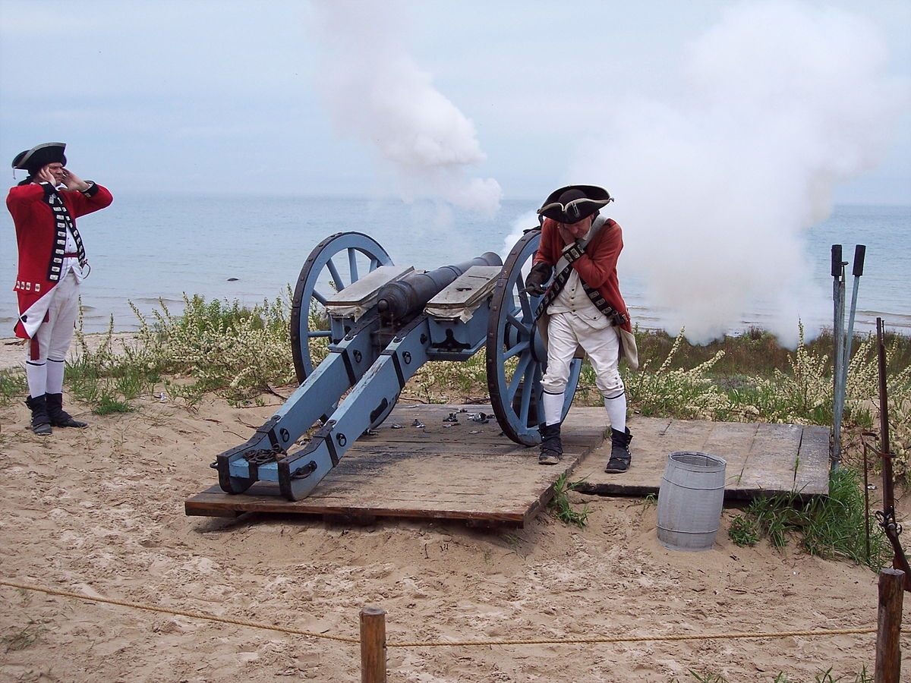
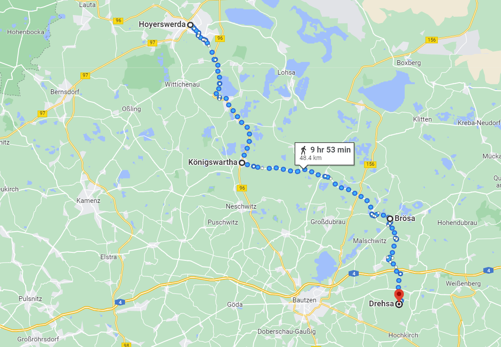
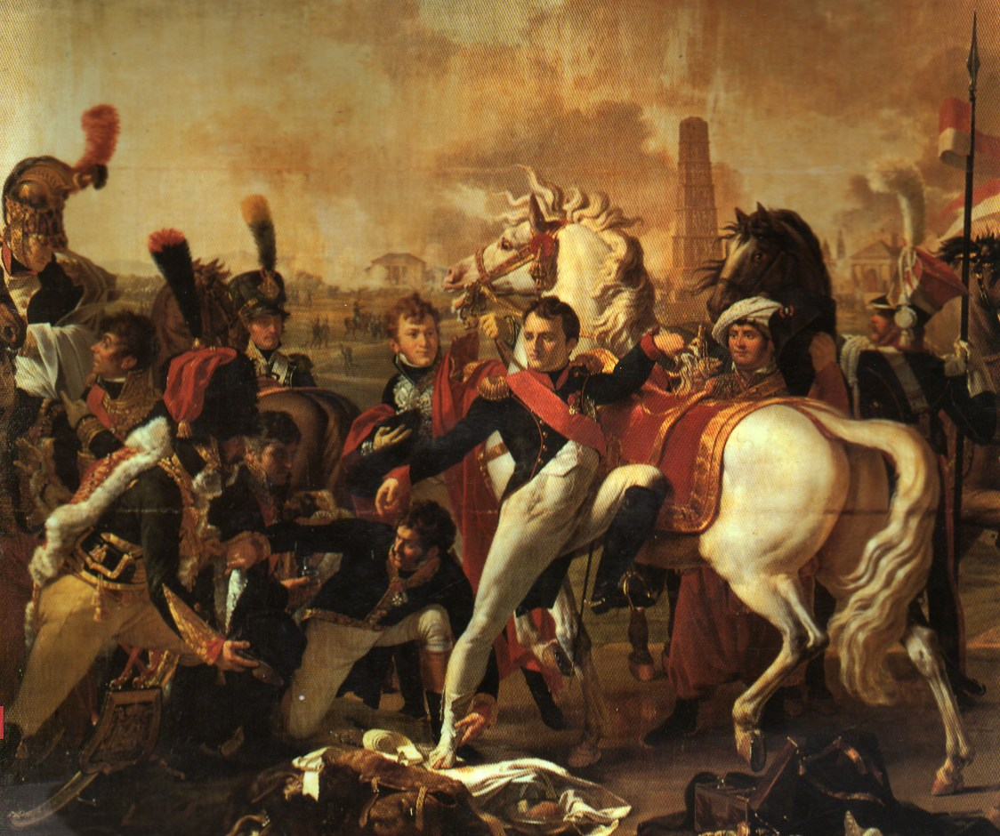
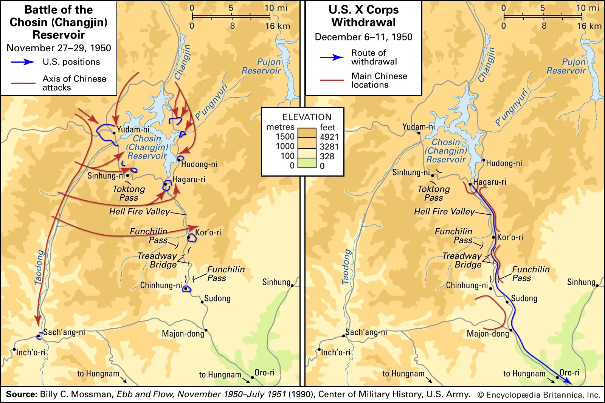
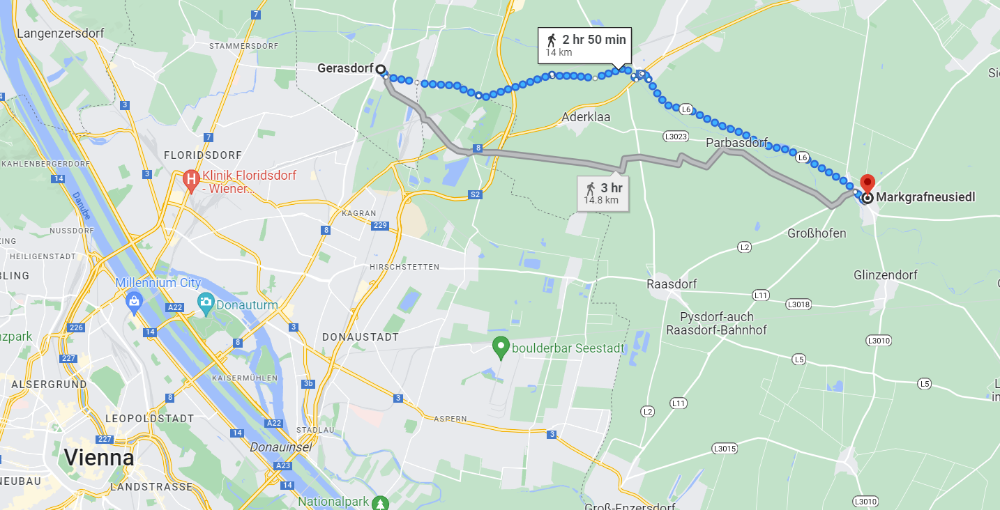

바우첸을 향하여 (14) - 사람은 자기가 원하는 것만 본다
게시: 2023-03-13T06:30:17+09:00
5월 19일 오전, 네슈비츠(Neschwitz)로 가던 로리스통이 뜻하지 않게 길 위에서 맞닥뜨린 사람은 그루시(Emmanuel de Grouchy) 장군이었습니다. 그는 전날인 18일 오전 10시, 베르티에가 보낸 명령서를 가지고 있었습니다. 이 명령서에서 베르티에는 비로소 나폴레옹의 의도를 촘촘히 적었는데, 더욱 바람직했던 것은 여러 통의 암호화된 사본을 만들어 보냈다는 점이었습니다. 그 중 한 통을 가지고 네의 사령부를 찾아나섰던 것이 그루시였지요. 이렇게 그루시를 길 위에서 만난 덕분에 네는 나폴레옹의 본진 위치가 생각보다 더 서쪽이며, 나폴레옹이 네가 21일까지는 연합군의 측면을 위협하는 위치인 드레사(Drehsa)에 도착하기를 원한다는 것을 알 수 있었습니다.

(Within cannon-shot 이라는 영어 표현은 시대마다 달라지겠습니다만 나폴레옹 시절에 육군 장교끼리 나누는 대화라면 통상 대포알의 최대 사거리인 1~2km 정도를 뜻할 것 같습니다. 반면에 해군에서는 더 큰 32파운드 포를 의미했을 것이니 아마 3km가 넘었을 것입니다. 실제로 17세기 이후 사용되기 시작한 'cannonshot rule'이라는 원칙은, 국가의 영해는 해안에 설치된 해안포가 공격 가능한 거리까지라는 개념입니다. 즉 해안에서 약 3마일(4.8km)까지가 영해라는 것인데, 실제로 대포 사정거리가 점점 길어져 십수km까지 늘어난 뒤에도 여전히 3마일을 영해로 규정하는 규칙은 한동안 계속 되었습니다. 이런 표현은 몇 피트다 몇 미터다 하는 것보다 당시 군인들 사이에서는 더욱 이해하기 쉬웠을 것입니다. 이런 것에서 유래된 표현으로 within earshot 도 있습니다. 이건 몇 m 정도일까요? 그냥 귀로 들리는 거리라면... 정확히 몇 m인지는 몰라도 대충 이해는 가지 않습니까? 아마 20m 정도일까요?)
여기서 작은 문제는 베르티에가 표현한 위치였습니다. 이 편지에서 베르티에는 나폴레옹 본진의 위치가 '바우첸 마을에서 대포를 쏘면 닿을 거리 (à portée de canon)'라고 표현했습니다. 대포도 8파운드 포부터 32파운드 포까지 다양한 구경의 크고 작은 포가 있고, 같은 포의 사정거리에도 유효 사거리와 최대 사거리 등이 있습니다만, 당시 육군에서 많이 사용하던 8파운드~12파운드 포의 최대 사거리인 1~2km 정도를 말할 것입니다. 네의 궁극적인 도착 목표지점에 대한 표현도 약간 문제가 있었습니다. 당시 바우첸 인근에는 드레사라는 마을이 두 곳 있었던 것입니다. 하나는 현재 브뢰사(Brösa)로 불리고 다른 하나는 여전히 드레사로 불리는데, 드레사가 브뢰사보다 12km 정도 더 남쪽에 있습니다. 브뢰사는 연합군의 측면을 위협하기 좋은 자리이고, 드레사는 아예 연합군의 후방을 위협하는 자리입니다. 둘 다 나폴레옹의 의도를 실현하기에 나쁘지 않은 위치인데, 다만 드레사는 너무 과감한 위치라서 네가 21일 아침까지 도착하기엔 거리상으로나 연합군의 경계를 뚫고 가기에나 좀 버거운 위치라고 할 수 있습니다.

(이 지도에서는 호이어스베르다를 떠나 쾨니히스바르타를 거쳐 브뢰사, 이어서 드레사까지 내려가는 경로가 표시되어 있습니다. 전체 거리가 50km 정도라서, 이틀 동안 주파하기가 불가능한 거리는 아닙니다. 다만 브뢰사 이남부터는 사실상 적진이니 속도가 많이 느려질 수 밖에 없겠지요. 만약 로리스통이 그루시를 만나지 못해 그대로 내려왔다면 1차 목표로 도착했을 네슈비츠의 위치가 쾨니히스바르타 바로 아래에 보입니다.) 이런 사소한 지명과 위치 문제는 당시 군 지휘관들을 괴롭히던 고질적 문제였습니다. 나폴레옹도 네도 바우첸 일대의 지형이나 지리에 대해 당연히 잘 몰랐습니다. 그리고 당시엔 항공 지도도 없었고, 있다고 해도 지도에 표시된 마을이나 고개, 벌판의 이름은 언제나 불분명했습니다. 가령 나폴레옹이 드물게 부상을 당한 전투로 유명한 1809년 레겐스부르크(Regensburg) 전투만 해도, 프랑스군은 그 도시를 라티스본(Ratisbonne)이라고 불렀습니다. 당시 프랑스군의 지도에는 무엇이라고 표시되어 있었을까요? 나폴레옹은 정확한 지도 제작에 매우 큰 관심을 가지고 있었기 때문에 프랑스군은 유럽 어느 군대보다도 더 정확한 지도를 가지고 있었지만, 그래봐야 부정확하기는 마찬가지였고, 특히 각 지방 도시는 물론이고 마을 이름의 표시 방법은 제각각이었습니다. 어떤 마을 이름은 낯선 외국어를 소리나는 대로 적은 것도 있고, 어떤 것은 현지에서 쓰는 철자법을 그대로 적었으나 프랑스식으로 엉뚱하게 읽기도 했고, 그런 엉뚱한 프랑스식 발음을 다시 지도에 적어놓기도 했습니다. 더 심한 문제는, 나폴레옹이 가진 지도와 네가 가진 지도가 정확히 같은 것인지조차 불분명했습니다. 이런 사소한 혼란에도 불구하고, 네는 자신이 가야할 곳이 지금의 브뢰사라고 생각한 것 같았고, 실제로 나폴레옹도 거기를 생각했던 것으로 추정됩니다.

(결국 아스페른-에슬링 전투로 이어지는 1809년 제5차 대불동맹전쟁 중의 레겐스부르크 전투입니다. 이 그림에서는 나폴레옹이 오른쪽 발을 다친 것으로 묘사되었지만 실은 왼쪽 발을 다쳤습니다. 레겐스부르크는 바이에른의 도시라서 주변 사람들은 모두 이 도시를 레겐스부르크로 불렀지만, 프랑스에서는 로마시대 때의 지명인 'Ratisbona'에서 비롯된 이름인 라티스본(Ratisbonne)이라고 불렀고 프랑스의 영향을 받은 영국에서도 라티스본(Ratisbon)이라고 불렀습니다. 나폴레옹의 지도에는 이 도시가 라티스본이라고 적혀 있었을까요? 제대로 된 군사지도라면 레겐스부르크와 라티스본 둘 다 적혀 있었을 것입니다.)

(가령 한국전쟁 때의 미군 지도는 일제시대 때 일본이 제작한 한국 지도에 근거한 것이었기 때문에 장진호 전투의 장진호를 미군들은 그냥 지도에 적힌 대로 Chosin Reservoir라고 불렀습니다. 그 전투에서 살아남은 미해병들은 자기들을 Chosin Few라고 부르지요. 지금도 구글 맵에는 장진호라는 이름으로 검색해도 Chosin Reservoir라고 표시가 되어 있습니다. 물론 당시 미군에게는 영어를 할 줄 아는 한국군 연락원이 있었겠습니다만, 당장 그런 연락원이 배치되지 않은 부대의 미군들은 그 일대의 북한 주민들에게 '여기가 초신 리저부아냐'라고 묻고 주민들은 '아니다, 여긴 장진호다'라고 대답했을텐데, 아마 혼란이 좀 있지 않았을까요?) 이렇게 프랑스군이 초반의 혼선을 극복하고 연합군에 대한 회심의 일격을 준비하는 동안, 연합군은 수뇌부의 혼란 속에서도 묵묵히 땅을 팠습니다. 바우첸 일대의 낮은 언덕들에는 작은 마을들이 꽤 많이 산재했기 때문에, 연합군은 이런 마을들 사이에 참호와 보루, 목책 등을 설치하고 강화된 포대를 만들어 강력한 방어망을 구축하고 있었습니다. 문제는 이렇게 방어 진지 구축에 열중하다보니, 연합군의 전선이 지나치게 길어져 거의 14km에 가까왔다는 점이었습니다. 이건 완전무장한 군대가 3시간 넘게 걸어야 하는 거리였고, 10만도 안되는 연합군 병력이 지키기에는 너무 길었습니다. 양군 도합 30만이 맞붙은 희대의 대규모 전투인 1809년 바그람(Wagram) 전투에서 오스트리아군이 펼쳤던 방어선이 14km 정도였고, 그나마 오스트리아군은 그 방어선에 촘촘히 병력을 배치한 것이 아니라 바그람 일대의 고지대를 따라 중요 거점에만 병력을 배치했었습니다.

(1809년 바그람 전투 당시 오스트리아군의 방어선은 게라스도르프부터 마르크그라프노이지들까지의 14km 정도였습니다. 그리고 이건 당시 12만이 넘었던 오스트리아군으로서도 감당하기 어려울 정도로 지나치게 늘어진 것이었습니다. 실제로 나폴레옹은 그 점을 역이용하여 오스트리아군의 정면으로 쳐들어가는 대신, 다부의 강력한 군단을 동쪽의 마르크그라프노이지들의 측면에 투입하여 서쪽을 향해 김밥처럼 돌돌 마는 형식으로 오스트리아군을 패배시켰습니다.)
그 문제는 연합군 수뇌부 모두가 동의하는 바였기 때문에, 결국 5월 19일 비트겐슈타인은 다시 한번 병력 배치를 재정비하는 작전 계획서을 만들어 배포했습니다. 이 계획서에서 비트겐슈타인은 뤼첸 전투 때처럼 여러가지 전투 시나리오를 제시하고 각각의 경우에 어떻게 대응할지를 일일이 적었습니다. 그러나 아시다시피 전투 상황이 그렇게 어느 특정 카테고리로 분류될 정도로 명확하게 돌아가지도 않고 설령 그렇게 돌아간다고 해도 십여 km에 걸쳐 배치된 각 부대장들은 그런 상황을 실시간으로 파악하기도 어려웠습니다. 그런 계획이 실제로는 먹히지 않는다는 것을 뤼첸 전투를 겪어 보고도 실감하지 못한 것을 보면 확실히 비트겐슈타인은 그리 훌륭한 지휘관은 아니었던 것 같습니다. 이 작전 계획서에서 비트겐슈타인은 총 7가지 전투 시나리오를 제시했는데, 모두 프랑스군이 어떤 공격을 해오느냐에 따라 대응하는 방식이었습니다. 일단 그렇게 작전 주도권을 스스로 프랑스군에게 넘겨준 것도 문제였지만, 이 작전 계획에서 가장 큰 문제는 프랑스군이 서쪽에서만 쳐들어올 것이라고 가정하는 것이었습니다. 그리고 비트겐슈타인은 나폴레옹은 아마도 남쪽 보헤미아와의 국경 쪽으로 뻗은 연합군 좌익에 주공세를 퍼부을 것이라고 예측하고 그 시나리오에 가장 자세한 대응책을 적었습니다. 그리고 그에 따라 자신이 믿는 러시아군 주력 부대를 방어선의 좌익과 중앙에 배치했고, 상대적으로 신뢰성이 떨어졌던 프로이센군을 우익에 배치했습니다. 물론 나폴레옹의 실제 생각은 전혀 달랐습니다. 그는 북쪽에서 내려올 네와 로리스통이 연합군의 우익을 우회하여 연합군의 탈출로를 막게 할 생각이었습니다. 여기서 잠깐, 앞서 언급한 대로 바로 전날인 18일, 연합군은 탈취한 프랑스군의 전통문을 통해 북쪽에서 로리스통의 군단이 내려오고 있다는 것을 알고 있지 않았던가요? 왜 그런데 비트겐슈타인은 나폴레옹이 연합군의 우익이 아니라 좌익을 노린다고 생각했을까요? 그렇게 생각한 이유는 사람은 언제나 자기가 원하는 것만을 보기 때문이었습니다. 당시 연합군 수뇌부의 생각은 오스트리아를 전쟁에 끌어들이는 것에 집중되어 있었고, 오스트리아의 특별 사절 스타이온 백작도 연합군 진영에 와 있는 상태였습니다. 자신들이 간절하게 원하는 것이 오스트리아이다보니, 자연스럽게 나폴레옹도 오스트리아 국경선과 연합군 사이를 파고 들어 그 사이를 벌리려 노력할 것이라고 보았던 것입니다. 그리고 북쪽에서 내려오고 있는 로리스통의 군단에 대해 비트겐슈타인이 아무 생각이 없던 것은 아니었습니다. 그는 자기 나름대로는 꿩 먹고 알 먹는 기발한 아이디어를 냈습니다. 그리고 그 아이디어가 의도치 않게 홈런을 날립니다. Source : The Life of Napoleon Bonaparte, by William Milligan Sloane Napoleon and the Struggle for Germany, by Leggiere, Michael V
https://en.wikipedia.org/wiki/Battle_of_Ratisbon https://fr.wikipedia.org/wiki/Ratisbonne https://en.wikipedia.org/wiki/Battle_of_Bautzen_(1813)
https://en.wikipedia.org/wiki/File:Fort_Michilimackinac_cannon_firing.jpg
{kind=link}